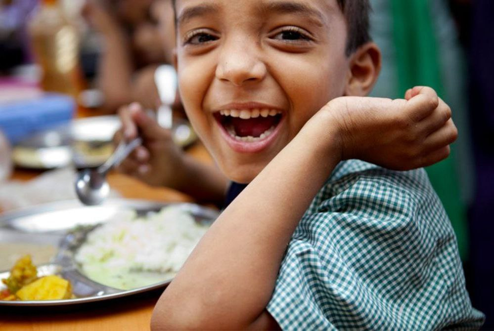

“Cutting food waste is a delicious way of saving money, helping to feed the world and protect the planet.”
c. Environmental Consequences:
- Resource Depletion: The production of wasted food consumes significant resources like water, energy, and land, contributing to resource depletion.
- Greenhouse Gas Emissions: Food rotting in landfills produces methane, a potent greenhouse gas that contributes to climate change.
- Biodiversity Loss: Excessive food production can lead to habitat destruction and biodiversity loss, affecting ecosystems.
D. Ethical and Moral Implications:
- Wasting food when many people go hungry raises ethical questions about the fairness and morality of our food systems
SOLUTION OF FOOD WASTAGE
- A. Economic Loss:
- Food wastage represents a significant economic cost, as valuable resources invested in production, transportation, and distribution are lost. This affects both producers and consumers.
- Wasted food could feed millions of people in need. Food wastage exacerbates food insecurity and hunger, as edible items are needlessly discarded while many go without enough to eat.
- The production of uneaten food contributes to greenhouse gas emissions, deforestation, and water pollution. Food in landfills generates methane, a potent greenhouse gas.
- The water, energy, and land used to produce wasted food deplete valuable resources, intensifying competition for these resources and impacting ecosystems.
- Wasted food can contribute to foodborne illnesses as it may be improperly stored or handled, posing health risks.
Our Works
"Look what we can do together."



DOOR PICKUP
"Your donate will be immediately collected and sent to needy people "